# shows
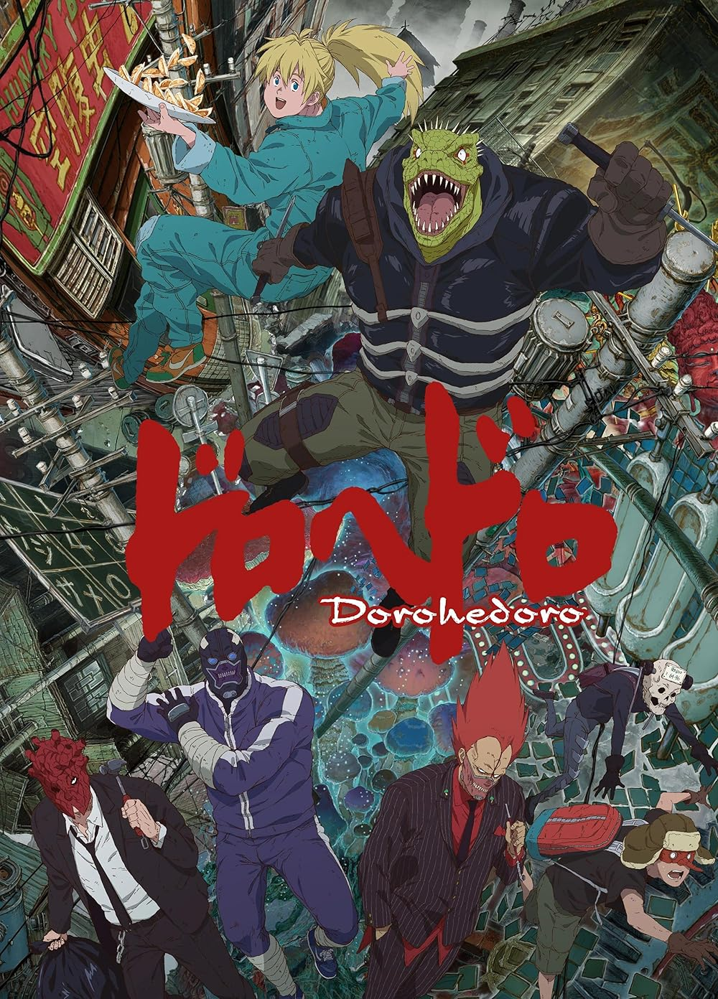
Dorohedoro
season one 12/12 episodes
3/31/26 - 3/31/26
-
season two 3/11? episodes
4/1/26 - tbd
★★★★★
thoughts
MY GOAT!!!!! i watched the entirety of season one around when it first came out and i was so stoked to see it's gotten a second one. so i binged all of s1 to prepare because i actually forgot a LOT. but oh my god. peak story. the mystery is so cool and i love seeing it slowly unravel.AND SEASON 2!!! 3 ep premiere is my saving grace. how did it get even better...
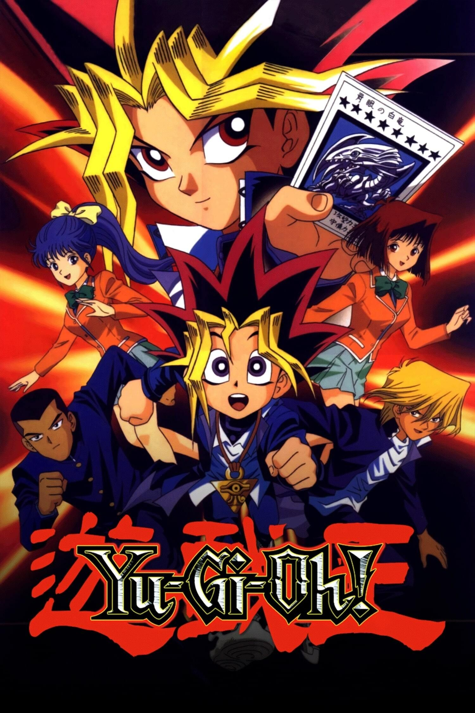
Yu-Gi-Oh! (1998)
3/27 episodes
2/13/26 - tbd
★★★★★
thoughts
ahh, season 0.. my first foray into the yu-gi-oh franchise. i'd say it's a good series to start out on, even though it's a bit of different tone than the rest of the franchise! not only does it give a bit of backstory into yugi and jonouchi's friendship (and honda too i guess), which duel monsters only shows brief flashbacks of, it also shows yu-gi-oh's darker origins and a bit of how it was originally intended to be a horror series. i ADORE the art style of this season, and also yami being shown as this shadowy entity.as this was my first intro to ygo, i actually got used to green-haired kaiba LMAO. i was a bit surprised to learn he had brown hair in every other iteration! it's nice to be able to revisit this series, i think this will be my third? time watching season 0!
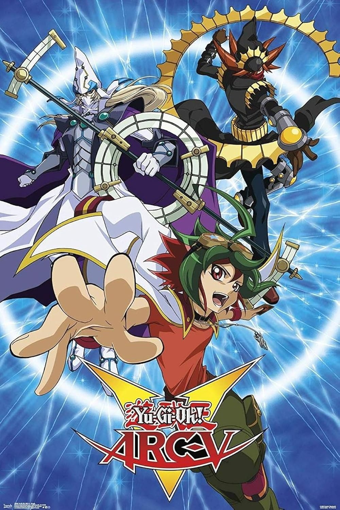
Yu-Gi-Oh! Arc-V
51/148 episodes
2/5/26 - tbd
★★★
thoughts
i actually started this sometime last year, and picked up at episode 41 on the date listed. i did NOT feel like starting it over just to have a precise date, LOL.i have mixed thoughts on this series. it's not bad, and the dimension stuff is interesting, but i do find myself laughing at how ridiculous it can be sometimes. like the whole yuya and yuzu doppelganger situation, except none of them look anything alike apart from Maybe the face. and yet the characters still mix them up all the time! and yuya can be a bit much sometimes. also some of the character's bits can get repetitive.. reiji is cool though!!
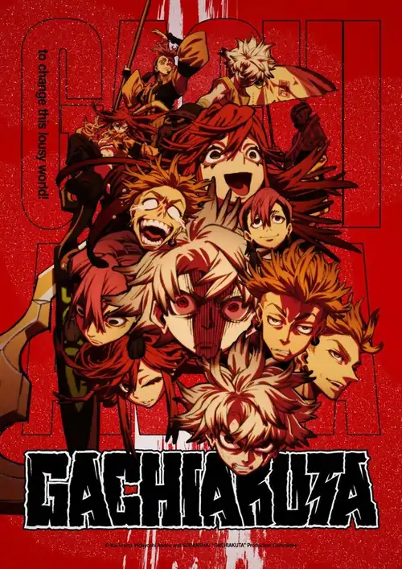
Gachiakuta
3/24 episodes
1/20/26 - tbd
★★★
thoughts
really silly and fun. soul eater vibes are strong! the concept is simple but interesting, and i like the world it's built. it's nothing groundbreaking but that's alright! the art direction is really cool and i love the graffiti aspects.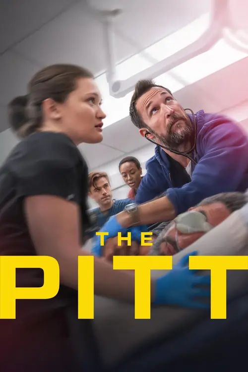
The Pitt
season one 15/15
2025 - 2025
-
season two 9/15
1/9/26 - tbd
★★★★★
thoughts
i really like this show. it's one that keeps my attention because there's a lot going on and you kind of have to keep track of the patient's stories as they go back and forth with them. it's chaotic but in a good way! i watch this show with my mom and it's one we both are hooked on. it's interesting to learn about all of the staff as well!!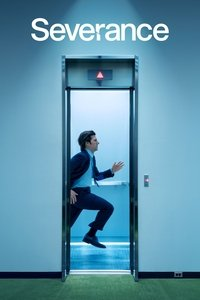
Severance
season one 9/9
1/17/26 - 3/1/26
-
season two 4/10
3/17/26 - tbd
★★★★★
thoughts
SO GOOD. i'm watching this with my dad so i can't watch ahead but this series makes me reallly want to. the ending of season one was amazing, a cliffhanger that definitely makes me glad i don't have to wait for a season two LOL. i love the aesthetics and set design, particularly for the severed floor. it's just soooo cool.. definitely reccomend.# movies back to top
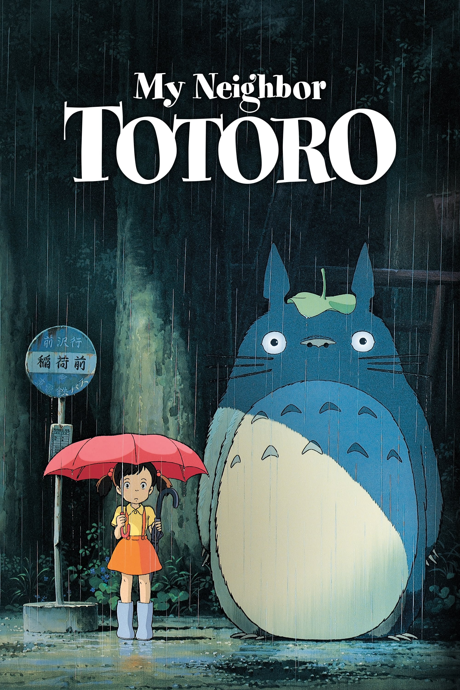
My Neighbor Totoro
3/24/26
★★★★★
thoughts
SOOO cute and sweet wow. i really really enjoyed this. just overall a nice watch, and also of course the animation is fantastic! my one and only nitpick is the poster being off- both sisters are present in this scene, and one is carrying the other but they kind of merged them into one? like it doesn't resemble either of the girls. IDK!! but other than that. PEAK!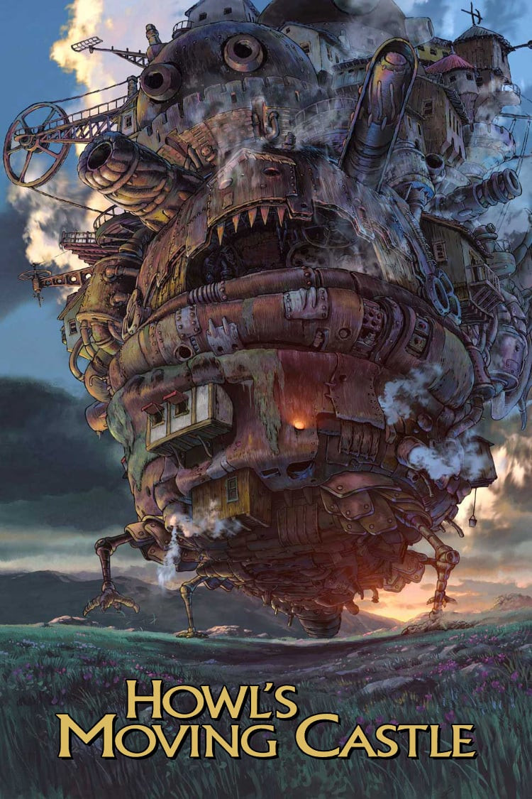
Howl's Moving Castle
3/24/26
★★★★★
thoughts
dude. Dudeeeee. so incredible wow. actually blown away from the art and animation. all the characters are great, calcifer my GOAT! can't believe i haven't watched this movie sooner.. was REALLY missing out!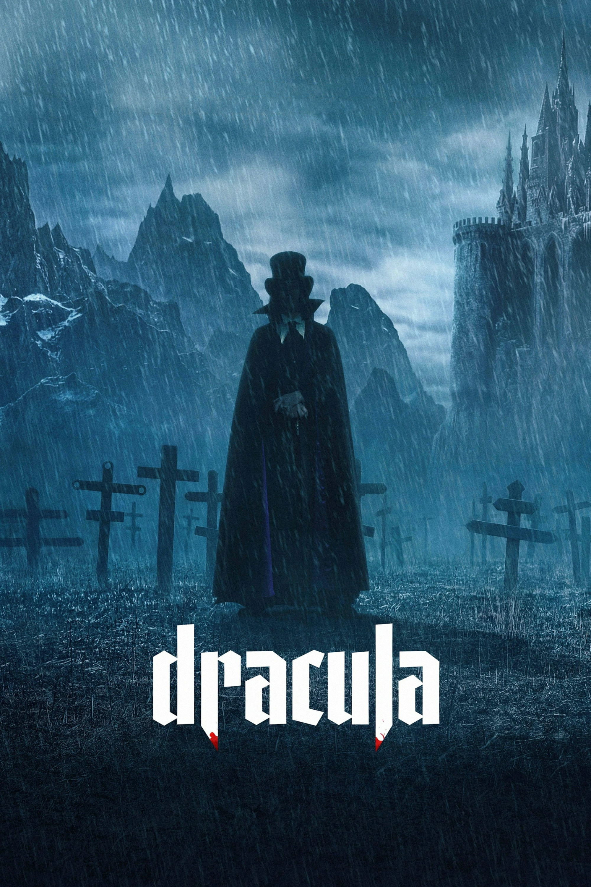
Dracula
3/3/26
★★
thoughts
this movie was just.. strange i guess. visually stunning! but like i don't know. the plot is that dracula gets bitches i guess! and fucks his wife a lot. obviously there's more than that LMAO. but like there's also these weird cgi gargoyles that turn into pale sickly children after dracula's curse is released. but they weren't vampires and were shown to be a thing before dracula was like? fully a vampire i guess? idk it was after he damned god but. shrugs. IDK!!!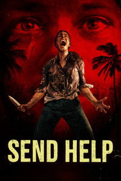
Send Help
2/7/26
★★★★
thoughts
this was a fun movie! the ending was a bit weak, but it wasn't bad. i saw it in theaters with my mom! linda was a fun character, she's crazy LOL. reminds me a lot of misty from yellowjackets, especially with the bird!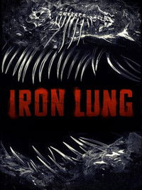
Iron Lung
2/3/26
★★★★
thoughts
my manager told me she liked this one, so i decided on a whim to watch this in theaters. i enjoyed it! i've heard some mixed reviews, but if you don't mind a bit of a slow burn i'd reccomend it. kept my attention the entire time, and it got really intense towards the end. i didn't fully grasp the lore but i think the mysteriousness was on purpose. not fully knowing what's going on so you anticipate what's coming next, or something.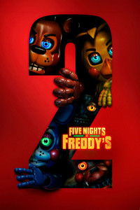
Five Nights at Freddy's 2
1/31/26
★★
thoughts
honestly, after watching the first film when it came out i was satisfied with just that. i saw no need for a second film! so i wasn't rushing to watch this one at all. now that i have, all i can think of is... "meh!". wasn't invested in the plot at all, and it just didn't really make sense to me how in-universe freddy's became such a craze. it just feels like a really cheesy movie that happened to score a big budget. the animatronics are cool though! sorry for being a hater.. i had fun watching it at least# books back to top
title
0/100 pages
date - date
★★★★★